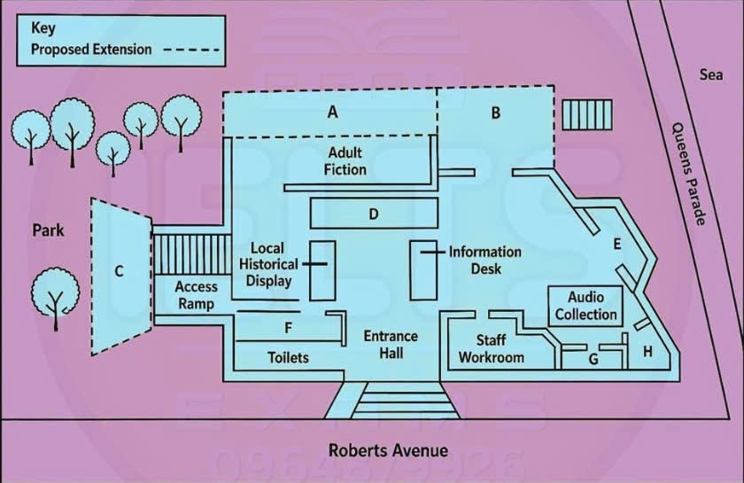

Phiếu trả lời Listening
Bấm số câu để nhảy tới câu đó. Bài làm được tự lưu trên máy này. Thời gian thi thật: khoảng 30 phút.
PART 1 Questions 1–10
Complete the form below.
Write ONE WORD AND/OR A NUMBER for each answer.
Car Servicing
Example: Customer name: Ian Croft
Car details
Registration number:
Make and model: Vida (4-door saloon)
Date of manufacture: 2001
Number of miles:
Problems
needs two new
the inside needs fixing
one passenger seat is stuck
the needs replacing
the brakes of the car need attention
needs a spare
Service arrangements
Date/Time: Tuesday 5 October 8.00 a.m.
Courtesy car? Yes, preferably
Customer details
Address: 361 College Road, Norwich
Phone:
📜 Lời thoại Part 1
You will hear a telephone conversation between an assistant at a car service station and a customer. First, you have some time to look at questions one and two on page two. You will see that there is an example that has been done for you.
On this occasion only, the conversation relating to this will be played first. Good morning servicing department. Good morning, I'd like to book my car in for a service please.
The customer's name is Ian Croft, so Croft has been written in the space. Now we shall begin. You should answer the questions as you listen because you will not hear the recording a second time.
Listen carefully and answer questions one and two. Good morning servicing department. Good morning, I'd like to book my car in for a service please.
Certainly sir. If I could just take your name. Ian Croft.
Right, and have you had the car serviced with us before? No, I've only just moved here. Right, so I'll need to take some details of the car then. So could I have a registration number please? BD51STR.
Is that B for Bravo at the beginning? Yes, that's right.
And the make of the car? It's a Vida. Right, and is that the estate? No, the four-door saloon. Good, and do you know the date of manufacture?
Mmm, about... oh hold on, I'll have to work this one out.
We've had it for ages. It must be 2001. Right, and can you tell me what the mileage is? It's done a lot.
Let's see, I did make a note of it. Yes, it's 180,000 miles. It's done very well actually.
Before you hear the rest of the conversation, you have some time to look at questions three to ten on page two. Now listen and answer questions three to ten. Right, well now of course we'll do a full service, but are there any particular problems or things you'd like us to check? Yes, a few.
I think a couple of the tyres probably need replacing. They're getting a bit worn. OK, we do automatically look at those, but I'll make a note of that anyway.
Then, it's not a big problem, but it's a bit annoying. When you open the car door, the light ought to come on inside automatically, but it seems to have stopped working. Right, we'll have a look at that for you.
I'm sure we can fix that. OK, what else? Oh yes, on one of the passenger seats at the back, you can't fasten the belt. It seems to have stuck.
It just happened yesterday, so that needs looking at. Yes, that's quite important if you carry passengers in the back. Anything else? Er, there was something.
Let me see. Well, one thing that's actually going to need replacing, I think, is the radio. It hasn't worked for some time.
Would you like us to give you a quote for that before we fit a new one? Yes, please. Oh, and I know what I meant to say. I know you'll check the brakes in a service, but can you have a particular look at the front ones? I think they might be a bit worn.
Certainly. I'll make a note of that too. OK.
And the other thing is, I only have one key for the car and I really need a spare. Yes, we'll have to order that for you, but we can do that. Great.
So, when would you like to come in for the service? Well, do you have anything next week? Tuesday would be good. Er, that's the 4th of October, isn't it? No, the 5th.
Yes, can you make 8am? Yes, that's fine.
And the service will take a few hours, so would you like to have a courtesy car during that time? There's no extra charge. Yes, that would be good, but can I have an automatic if possible, please? We'll see what we can do. Right, and now I just need to take your address, Mr Croft.
It's 361 College Road, Norwich. And would you like a phone number? Yes, please. A daytime number would be best, if possible.
Right, 07847 355780. Lovely. So, that's it.
Thank you very much, Mr Croft.
PART 2 Questions 11–20
Questions 11–15
Choose the correct letter, A, B or C.
11 Why David Laws leading the meeting instead of Penny Williams today?
12 What does David say has been a problem with guest speaker talks?
13 What did the man say about break-in at library?
14 Why they want to make an extension of the library?
15 The investment from the city council will be deployed for
Questions 16–20
Label the map below.
Write the correct letter, A–H, next to Questions 16–20.
Rosedale Library

16 Children’s room
17 Community room
18 Café
19 Academic study room
20 Multimedia room
📜 Lời thoại Part 2
Good morning, everyone. Welcome to Rosedale Library Open Day.
It's good to see that so many members of the public are interested in the future of the library. For those of you who don't know me, my name is David Laws. I'm the new personal assistant to Penny Williams, the library director.
Penny was supposed to be leading this meeting, but due to unexpected illness, I will be taking her place this morning. We felt that this would be better than postponing the meeting to a later date. Firstly, a couple of small matters.
The guest speaker talks this year have been incredibly popular, and the slight rise in ticket price has not put anyone off. We will continue to hold these events on a monthly basis. It has, however, come to our attention that some people have missed events because they didn't know they were on.
We now intend to notify everyone through email reminders. Also, you might be aware that we had a break-in last month, and while the thief or thieves actually left empty-handed, they did smash a number of windows and kick down a door trying to get in. Police believe the offenders were just taking a chance that there might be something valuable in the library.
Anyway, we hope that the new security cameras along Roberts Avenue might deter this kind of activity. Now, the purpose of the meeting, of course, is to present the proposals for a new library layout. Rosedale Library has been serving the public for 50 years, but it's not been extended since the renovations in 1969.
Since opening, the number of books on our shelves and other items has more than doubled, and visitor numbers have increased 20% in the last 10 years. There is, therefore, a clear need for an extension. We hope that you have noticed some recent improvements to the library, such as the eight new PCs that were installed back in June.
We're also aware that the lighting is quite poor, but you'll shortly see a big difference because the City Council continued to support us and have authorised the spending in this area. We've also applied to the Council to approve the addition of another member of staff to work part-time in the afternoons, when mothers and children tend to use the library more often, and this decision will be made in the next few weeks. Before you hear the rest of the talk, you have some time to look at questions 16 to 20.
Now listen and answer questions 16 to 20. Now, turning to the proposal for the extensions and alterations to the library, please see the second page of your handout. The double line indicates the rooms in the existing building, and the dotted lines show where the extensions might be.
As you can see, the location of the entrance hall to the library would remain unchanged there at the bottom of the plan. Once you go all the way through the entrance hall, on your immediate left would be the local history display that would face the information desk. Behind it, the plan is for an access ramp inside the existing building, meaning the mothers with pushchairs and wheelchair users could ascend to the first new area.
This new room is designed to be light and airy, and could be the ideal location for a new children's room looking out onto the park. You will notice there are steps that lead back down to the ground floor. At the bottom of these, on the left, would be the adult fiction section, so no change there.
But behind this is proposed to construct a new community room for public lectures, special events and so forth. This will be the largest new room. To the right of the adult fiction room, with magnificent views of the sea, a cafe could provide visitors with light refreshments and an opportunity to browse a range of magazines.
There would be external access to this area via a set of steps leading down towards Queen's Parade. Now, let's go back to the entrance hall again. On the right of the entrance hall, facing onto the right Roberts Avenue, is the new staff workroom.
The fact that the workroom would be overlooking Roberts Avenue means the staff will actually be able to see outside rather than be stuck in the small room behind the toilets. The room looking out onto both Queen's Parade and Roberts Avenue would be the academic study room, a facility we believe could be used by the growing number of local students. Also facing Roberts Avenue but not Queen's Parade would be the multimedia room with our extensive audio collection right behind it.
That is the end of Part 2. You now have half a minute to check your answers.
PART 3 Questions 21–30
Questions 21–25
Choose the correct letter, A, B or C.
The artist Samuel Prout
21 According to Jack, why did Samuel Prout never become very famous?
22 Dr Rubin and Jack agree that many of Prout’s problems were caused by
23 How did Prout learn painting?
24 What point does Jack make about Prout’s style?
25 What did John Ruskin admire about Prout’s paintings?
Questions 26–30
What information do the speakers give about each of the following pictures?
Write the correct letter, A–G, next to Questions 26–30.
Pictures
A view in Germany: at Wurzburg
Bridge on the Ouse, near York
Wooden scene
Venice
Entrance to a harbor
Information
A one of several paintings of the same view
B probably an inaccurate title
C may not be genuine
D was never finished
E typical subject matter for Prout
F skillful painting of light and dark
G shows an event that never took place
📜 Lời thoại Part 3
You will hear an art history student called Jack talking to a lecturer, Dr. Reuben, about an English artist called Samuel Prout. First, you have some time to look at questions 21 to 25 on page 5. Now, listen carefully and answer questions 21 to 25.
Dr. Reuben? Hello, Jack. So, have you chosen which artist you're going to give your presentation on? Yes, Samuel Prout, the 19th century English watercolour painter.
Right, interesting choice.
I always feel he never quite got the fame he deserved, did he? No, I think that's true. I mean, I don't think he ever went completely out of vogue even though tastes and fashions come and go. He was really prolific in his day but there's never really been a high-profile showing of his paintings.
That could have brought him to more people's attention. Sure, but I think it's remarkable that he achieved any critical success given the problems that he had. Apparently, he was prone to chronic chest infections throughout his life.
Yes, it must have been hard for him but it seems he had a loving wife and family. And a strong network of colleagues and supporters. Yeah, I've been trying to find out what got him interested in painting in the first place.
He doesn't seem to have learned the skill from his father like so many artists of his time. No, well, I think he painstakingly reproduced other painters' works essentially sort of schooling himself. And then later on he actually became an art teacher.
How do you feel about Prout's style of painting? It's interesting how a lot of artists you can see how their style is developing as their work matures but not so much with Prout. He seemed to have several on the go all at the same time. Yes, with others you can say oh, that must be by so-and-so and painted in around 1820, say.
Right, but not so much with Prout. Of course, Prout's career had a huge boost when the art critic John Ruskin declared him a great artist. Yes, but Ruskin's assessment was quite biassed, wasn't it? How do you mean? Well, Ruskin admired Prout and he didn't seem to mind the fact that many of his paintings showed more or less the same thing European street scenes or that the people in Prout's pictures can look rather wooden and not very lifelike.
For me, his detailing of architecture was too predictable but for Ruskin that was where Prout's genius lay. Well, I guess that's what Ruskin was particularly interested in. Before you hear the rest of the discussion you have some time to look at questions 26 to 30 on page 6. Now listen and answer questions 26 to 30.
OK, Jack, so your brief was to prepare a presentation to give to the group and show some pictures associated with the artist each of which makes a key point about their work, OK? Right, well, I wanted to start with a view in Germany at Würzburg. It's a detailed watercolour showing a busy market scene with a background of flamboyant detail like in so many of his pictures. Yes, basically what Prout had made his name doing so well.
It really gives the flavour of his work. Right. There's a painting called Bridge on the Ouse near York except that experts now think this isn't York at all but somewhere in the south of England.
Right. But as far as I know the picture has never been renamed. No, that would make cataloguing and researching Prout's pictures more complicated.
And the next one is called Woodland Scene. This one has a signature, it says S. Prout in the bottom left but even so experts on Prout say they doubt he actually painted it. Yes, I remember reading that.
The detailing is too clumsy with the sun not casting shade in the right place. Exactly and there's a lot of blue that basically doesn't appear in any other Prout pictures so it's probably a forgery. Yes.
And what's the next one? Venice. It's a view from the Grand Canal with some rather grand buildings. They're bathed in sunlight with a sort of picturesque shadow cast by the buildings opposite which is shown brilliantly.
Lovely use of colour. Prout at his best, I think. Right.
And then there's Entrance to a Harbour. Right. He grew up by the sea, didn't he? Yes, in Plymouth.
He didn't specialise in seascapes but this same location with the harbour and the sea also appear in other pictures showing a range of weather conditions. They don't all have figures like this one but I think they're really well done. Right.
That is the end of section three. You now have half a minute to check your answers.
PART 4 Questions 31–40
Complete the notes below.
Write ONE WORD ONLY for each answer.
Case Study: Chocozine’s difficult decision
Background
Smith and his colleagues noticed the spread of mass-customisation in many US
They decided to apply the idea to chocolate, and allow clients to decide which ingredients they wanted.
They called their company’s ‘Chocozine’.
The email order
A European retailer wanted 15,000 chocolate bars to use as a for customers.
The deal could improve their sales and provide
But there were risks:
They might not have sufficient time for the job.
If they failed, it could affect their finances and their
They only had three , which was not enough.
They attempt to subcontract
At first they couldn’t find a subcontract with the right
A Harvard professor invited Smith to speak to students.
Many students said it would be a to do the deal.
One student had a in the chocolate industry.
But this subcontract had trouble with the unusual of the chocolate bar.
Chocozine finally declined the order, but their sales improved anyway.
Comment
- Accepting orders has created severe problems for many new businesses.
📜 Lời thoại Part 4
Now turn to section four on page seven.
You will hear part of a lecture in a business class. The professor is discussing a case study of a company in North America called Chocozine. First, you have some time to look at questions thirty-one to forty on page seven.
Now listen carefully and answer questions thirty-one to forty. We've been talking about small businesses and some of the challenges they face. Today, I want to look at a case study based on a company called Chocozine that illustrates the need to evaluate opportunities very carefully.
A man called Eric Smith and two of his colleagues were struck by the mass customisation movement that was spreading through a large number of industries in the US. This involved mass-producing products and at the same time individually customising them for their customers. Why not apply the same concept to chocolate? Customers could choose the ingredients they'd like to have put into their chocolate bars.
So Smith and his colleagues decided to launch a customised chocolate operation called Chocozine. Then, when Chocozine was only about nine months old, Smith received an email from a large European luxury retailer. This retailer was enquiring about ordering 15,000 bars of chocolate for their customers.
They wanted to give these as a gift in their high-end stores in New York City, Miami and Los Angeles during the holiday shopping season. The offer certainly sounded enticing because Chocozine was selling fewer than 150 chocolate bars a day. Smith and his co-founders knew it could also be very good publicity, so they needed to consider it carefully.
They had many things to consider. Obviously, it was a tempting offer. But at the same time, the risk was great.
They didn't know whether they could get the order completed in time. Also, if they accepted it and then it turned out they couldn't do it, what about the financial fallout as well as the possible damage to the company's reputation? As well as this, another thing they had to think about was how they were actually going to produce all these chocolate bars as the number of machines they had was limited. They only had three of them, and that clearly wasn't going to be enough.
So they decided to think creatively and try to find a subcontractor to produce the bars. They weren't ready to pass up such a rare opportunity. Smith spent two days searching for a suitable subcontractor, but he couldn't find anyone who had experience of making bars with the type of melted toppings that Chocozine used.
Then something rather unexpected happened. A professor at Harvard Business School was teaching a class about product customisation. So she wrote to Smith and asked if he would speak to the students.
So in late October, Smith had an opportunity to talk about the deal to about 90 MBA students and to ask them for their advice. Many of the students thought that doing the deal with a luxury retailer would be a mistake. However, after the class, Smith spoke with one of the students.
This student had worked as a buyer at a major chocolate retailer, and he said he had a contact in the business who might be interested in doing the job. Smith called the new subcontractor the next day. He said he was interested in doing the order, but he found there were difficult technical issues to be worked out, including how to faithfully reproduce the distinctive shape of the Chocozine bars.
Smith thought about it, and in the end, reluctantly, he sent an email declining the luxury retailer's order. But fortunately for Chocozine, their sales picked up anyway, and the company gradually expanded its market share and is now doing very well. Chocozine's case is important.
They were wise to carefully consider whether they could actually manage an order of this kind. But not every small business will have the happy ending that Chocozine did. And taking on too big an order has destroyed many a small business.
That is the end of section 4. You now have half a minute to check your answers. That is the end of the listening test. You now have 10 minutes to transfer your answers to the listening answer sheet.
Phiếu trả lời Reading
Bấm số câu để nhảy tới câu đó. Bài làm được tự lưu trên máy này. Thời gian thi thật: 60 phút.
READING PASSAGE 1 Questions 1–13
You should spend about 20 minutes on Questions 1–13, which are based on Reading Passage 1.
SEAWEED
Seaweed, a common plant that grows in the sea, has been an important food, fuel, and fertilizer since prehistoric times. For example, it has supplemented the diet of sheep in the Orkneys, islands off the coast of Scotland, since Neolithic times, roughly 5000 years ago. In the early part of the 8th century in Japan, seaweed was already such a key part of people’s regular diet that legislation was introduced giving people the right to pay their taxes to the Emperor in the form of seaweed.
The oldest evidence of seaweed use was found in South America, dating from 12,500 years ago. The remains of red seaweed mixed with a medicinal herb were discovered on the floor of a medicine hut at Monte Verde, Chile, one of the oldest human habitation sites in the Americas. The Monte Verde findings led to a re-evaluation of the importance of plants to the communities of that region. It was previously believed that their diet was predominantly meat-based, and therefore reliant on the hunting skills of men. However, these findings suggest that women, known to be responsible for the gathering of plants such as seaweed, also played an important pait in the provision of food.
The first recorded commercial use of seaweed in Europe was in the 17th century in France and Norway. Coastal populations, mainly farmers, gathered and burnt seaweed to produce potash, a substance which is used in the production of glass and soap. In 1800, Norway exported 1500 tonnes of potash.
Simple seaweed cultivation techniques were first developed in Japan in the mid-17th century and became increasingly popular over the next three centuries. In 1948, however, a series of typhoons combined with increased pollution in coastal waters led to a total collapse in Japanese production of nori, the type of seaweed used to make sushi. And because almost nothing was known about its life cycle, no one could figure out how to grow new plants from scratch to repopulate the depleted seaweed beds. The country’s nori industry ground to a halt, and many farmers lost their livehoods. It was a British scientist, Dr. Kathleen Drew-Baker, who was credited with saving Japan’s seaweed farming industry. Based at Manchester University in the 1940s, she was studying a seaweed called laver, which is the Welsh equivalent of nori. In 1949, she published a paper outlining her discovery that certain tiny algae were actually baby seaweed, rather than an entirely separate species, as had previously been thought. After reading her research, Japanese scientists quickly developed methods for seeding these tiny algae artificially so that new plants could be grown. This made the mass production of nori possible. Although hardly anyone has heard of Dr Drew-Baker in the UK, she is known as the ‘Mother of the Sea’ in Japan, and a statue of her can be found in the Japanese city of Osaka.
In the United States, Professor Charles Yarish of the University of Connecticut should probably be called the ‘Father of the Sea’ for his work on kelp, a large brown seaweed. The renowned scientist, who has been studying the biology of seaweed since the early 1970s, recently turned his attention to the development of revolutionary techniques for the harvesting of this species. Yarish has helped make it an economically viable crop for the New England fishermen whose livelihoods were threatened by a combination of overfishing, pollution, and warming waters.
As the world population grows and the climate changes, there is increased interest from businesses and development organizations in the use of seaweed for food and energy. Seaweed, which can grow rapidly and efficiently, provides plant-based proteins, and could also be used as a source of biofuels to replace fossil fuels. Its ability to absorb a number of environmentally unfriendly chemicals discharged by farms, factories and wastewater treatment plants also makes it valuable as a means of reducing pollution.
Seaweed cultivation in Asia has grown from the late 1950s into an industry offering sustainable employment in developing and emerging economies in many countries, notably Indonesia and China. However, seaweed farming is not very well developed in Europe and the industry still relies on the harvesting, either manually or mechanically, of wild seaweed. The main constraints on the development of seaweed farming in Europe have been the lack of markets and the relative expense of European production compared to Asian production.
A 2016 report from the World Bank estimates that annual global seaweed production could reach 500 million dry tons by 2050 if the industry is able to increase its harvest by 14% per year. Hitting that 500 million mark would boost the world’s food supply by 10% from the current level, generating 50 million jobs in the process. As a biofuel for vehicles, it could also replace about 1.5% of the fossil fuels used today.
Questions 1–5
Choose TRUE if the statement agrees with the information given in the text, choose FALSE if the statement contradicts the information, or choose NOT GIVEN if there is no information on this.
1 Seaweed has been used to feed animals on some Scottish islands for thousands of years.
2 In the 8th century in Japan, eating seaweed was reserved for special occasions.
3 The findings at Monte Verde revealed new information about the significance of women’s roles in prehistoric times.
4 Potash was Norway’s largest export in the 1800s.
5 Dr Kathleen Drew-Banker is more famous in Japan than she is in the UK.
Questions 6–13
Complete the notes below.
Write ONE WORD ONLY from the passage for each answer.
Japanese seaweed industry
was destroyed by pollution and in 1948
recovered as a result of Kathleen Drew-Baker’s research into a seaweed species similar to nori
Seaweed farming in the USA
new methods have resulted in the type of seaweed called becoming a successful crop
has provided an alternative source of income for
Seaweed production in the future
may be used to minimise the harmful effects of various produced by different industries
the cost of production and shortage of may be preventing growth of the industry in Europe
could create very large numbers of new
could be used instead of oil to power a small percentage of
READING PASSAGE 2 Questions 14–26
You should spend about 20 minutes on Questions 14–26, which are based on Reading Passage 2.
THE HISTORY OF CELTIC LANGUAGE
A In November 1897, in a field near the village of Coligny in eastern France, a local inhabitant unearthed two strange objects. One was an imposing statue of Mars, the Roman god of war. The other was an ancient bronze tablet, 1.5 metres wide and 1 metre high. It bore numerals in Roman but the words were in Gaulish, a version of the Celtic language spoken by the inhabitants of France before the Roman conquest in the first century BC. The tablet turned out to be one of the most important sources of words from this extinct language.
B Two researchers, geneticist Dr Peter Forster and linguist Dr Alfred Toth, have now used the calendar and other Celtic inscriptions to reconstruct the history of Celtic and its position in the Indo-European family of languages. They say that Celtic became a language in its own right and entered the British Isles much earlier than supposed. Then in the first century BC, the Romans defeated the Celts, both in France and in Britain, so decisively that their language, Latin, and its successor languages displaced Celtic over much of its former territory. In the British Isles, Celtic speakers survived in two main groups: the Goidelic branch of Celtic, which includes Irish and Scots Gaelic, and the Brythonic branch, formed mainly of Welsh and Breton, a Celtic tongue carried to Brittany in France by emigrants from Cornwall.
C Because languages change so fast, historical linguists have little faith in language trees that go back more than a few thousand years. Dr Forster has developed a new dating method for relating a group of languages, basing it on the tree-drawing techniques used to trace the evolutionary relationships among genes. The method will work on just a handful of words, a fortunate circumstance since only some 30 Gaulish words have known counterparts in all the other languages under study. Dr Forster and Dr Toth have used the method to draw up a tree relating the different branches of Celtic to one another and to other Indo-European languages like English, French, Spanish, Latin and Greek. In a published article, they say that soon after the ancestral Indo-European language arrived in Europe over 5,000 years ago, it split into different branches leading to Celtic, Latin, Greek and English. Within Celtic, their tree shows that Gaulish the mainland European version of the language separated from its Goidelic and Brythonic cousins, much as might be expected from the facts of geography
D The researchers' method even dates the points at which their language tree divides, although the dates have a wide range of possibility. They calculate that the Indo-European language initially fragmented in Europe around 8100 BC, plus or minus 1,900 years, and the divergence between the mainland European and British versions of Gaelic took place in 3200 BC, plus or minus 1,500 years. These dates are much earlier than previously estimated. ‘The traditional date of the Indo-European fragmentation has been 4000 BC for some time,’ said linguist Dr Merritt Ruhlen. He said the new method ‘seems pretty reasonable’ and should be useful in tracing back the earlier history of the Indo-European language.
E Specialists have long debated which country was the homeland of the Indo-Europeans and whether their language was spread by conquest or because its speakers were the first agriculturists whose methods and tongue were adopted by other populations. The second theory, that it was spread by agriculture, has been advocated by archaeologist Dr Colin Renfrew. Dr Forster, who works with Dr Renfrew, said in an interview that the suggested date 8100 BC for the arrival of Indo-European in Europe does seem to vindicate Renfrew's archaeological idea that the Indo-European languages were spread by farmers. Agriculture started to arrive in Europe from the Near East around 6000 BC, which is earlier than the traditional date proposed by linguists for the spread of Indo-European. This writing would fit with the lower end of Dr Forster's range of dates.
F Dr Forster said that his estimated date of 3200 BC for the arrival of Celtic speakers in the British Isles is also much earlier than the usual date, 600 BC, posited on the basis of archaeological evidence. Dr Forster and Dr Toth said their method of evaluating groups of languages against each other was similar to historical linguists, many of whom restrict their research to how words in only one single language have changed over time. Asked what linguists thought of his approach he said: ‘To be honest, they don't understand it, most of them. They don't even know what I'm talking about.’ The method used by Dr Forster and Dr Toth has two parts. One is to draw a tree on the basis of carefully chosen words; the second is to date the splits in the tree by calibrating them with known historical events. This is similar to the way geneticists date their evolutionary trees by tying one or more branch points to known dates from the fossil record.
G Dr April McMahon, a linguist at the University of Sheffield in England, said that Dr Forster's method ‘seems to me to be a good start’, and that it was reasonable to base a language family tree on just a handful of well-chosen words. She had less confidence in the dating method, she said, because language changes in an irregular way based on social factors like the size of the speaker's group and its degree of contact with others.
Questions 14–18
Reading Passage 2 has seven paragraphs, A–G.
Which paragraph contains the following information?
Write the correct letter, A–G, next to Questions 14–18.
14 a difference of opinion about where a group of languages originated
15 a reference to a mythological figure
16 an expression of one person's doubt about a particular method of analysing scientific data
17 an explanation of how one particular Celtic language spread due to the movement of people
18 the reason why some language experts distrust language trees
Questions 19–22
Look at the following statements (Questions 19–22) and the list of researchers below.
Match each statement with the correct researcher or researchers, A, B, C or D.
Write the correct letter, A–D, next to Questions 19–22.
NB You may use any letter more than once.
List of Researchers
A Dr Peter Forster & Dr Alfred Toth
B Dr Merritt Ruhlen
C Dr Colin Renfrew
D Dr April McMahon
19 An approach commonly used in language research has too narrow a focus.
20 The number of people who use a language has an effect on the modifications the language undergoes.
21 The Celtic language has been a distinct language for longer than experts previously thought.
22 The use of one family of languages may have become more extensive due to farming practices.
Questions 23–26
Complete the sentences below.
Write ONE WORD ONLY from the passage for each answer.
The script on the bronze tablet discovered in Coligny in France was written in a form of Celtic called
After the success of the Roman Empire in conquering many parts of Europe, and its related languages became the predominant languages.
is known to have occurred among the various versions of the Gaelic language around 3200 BC.
For social reasons, developments in languages are
READING PASSAGE 3 Questions 27–40
You should spend about 20 minutes on Questions 27–40, which are based on Reading Passage 3.
The psychology of new product adoption
John Gourville explores the reasons why consumers don't always buy new products.
An American philosopher once said, "If a man can ... make a better mousetrap than his neighbor ... the world will make a beaten path to his door." If only marketing innovation was that simple. In today's marketplace, companies that successfully introduce new products are more likely to flourish than those that don’t. However, businesses spend billions of dollars making better "mousetraps" only to find consumers rejecting them. Studies show that new products fail at the staggering rate of between 40% and 90%. In the US packaged goods industry, for example, companies introduce 30,000 new products every year, but 70% to 90% of them stay on store shelves for less than 12 months. According to one study, 47% of the start-up companies that pioneered new products later went out of business altogether.
Experts and novices alike tend to dismiss unsuccessful innovations as bad ideas that were destined to fail. But surely that's too simple an explanation. If these innovations were so misguided, why wasn't it obvious from the outset? Why don't consumers buy. innovative products with distinct advantages over existing ones? To understand why new products fail we must delve into the psychology of behavior change.
Companies have long assumed that they have only to develop innovations that are objectively superior to existing products, and consumers will have sufficient incentive to purchase them. In the 1960s, communications scholar Everett Rogers called the concept "relative advantage" and identified it as the most critical driver of new-product adoption. Although compelling, the theory has one major flaw: it fails to capture the psychological biases that affect decision-making. In 2002, psychologist Daniel Kahneman won the Nobel Prize in economics for his research into the reasons why individuals deviate from rational economic behavior. One of the cornerstones of that research, developed with psychologist Amos Tversky, is how individuals value choices in the marketplace. Kahneman and Tversky showed that our responses to the alternatives before us have four distinct characteristics.
First, people evaluate the attractiveness of an alternative based not on its objective or actual value, but on its subjective or perceived value. Second, consumers evaluate new products relative to the products they already own. Third, people view any improvements relative to this reference point and treat all shortcomings as losses. Fourth, and most important, losses have a far greater impact on people than similarly sized gains, a phenomenon that Kahneman and Tversky called "loss aversion". Loss aversion leads people to value products they already possess more than those that they don't. In other words, our desire to keep what we have is far greater than our desire to gain something new.
In a 1990 paper, behavioral economist Richard Thaler and his colleagues described a series of experiments they conducted to quantify this phenomenon. In one experiment, they gave coffee mugs to a group of people, the "Sellers", and asked at what price point, from 250 to $9.25, they would be willing to part with those mugs. The researchers then asked another group, the "Choosers", to whom they didn't give coffee mugs, to indicate whether they would choose the money or the mug at each price point. In objective terms, all the Sellers and the Choosers were in the same situation: they were choosing between a mug and a sum of money. In one trial the Sellers priced the mug at $7.12, on average, but the Choosers were willing to pay only $3.12. In another trial, the Sellers and the Choosers valued the mug at $7 and $3.50, respectively. Overall, the Sellers always demanded at least twice as much to give up the mugs as the Choosers would pay to obtain them.
In a 1989 paper, economist Jack Knetsch helped to explain why people tend to stick with what they have even if a better alternative exists, by providing a compelling demonstration of what is known as the "status quo bias". Knetsch asked one group of students to choose between an attractive coffee mug and a bar of Swiss chocolate. He gave a second group the coffee mugs but later allowed each student to exchange their mugs for a chocolate bar. Finally, Knetsch gave chocolate bars to a third group then later allowed them to exchange their bars for a mug. Of the students initially given a choice, 56% chose the mug and 44% chose the chocolate bar, indicating a near even split in preferences between the two products. Logically, therefore, about half of the students to whom Knetsch gave the coffee mug should have traded for the chocolate bar and vice versa. However, in reality, only 11% of the students with mugs and 10% of those with chocolate bars wanted to exchange their products. To approximately 90% of the students, giving up what they already had seemed like a painful loss and reduced their desire to trade.
Interestingly, most people seem oblivious to the existence of the behaviors implicit in these biases. In study after study, when researchers presented people with evidence that they had irrationally overvalued what they had, they were shocked, skeptical and more than a little defensive. These behavioral tendencies are universal, but awareness of them is not.
In a perfect world, companies would know that consumers irrationally overvalue incumbent products and would take that bias into account when launching innovations. But developers are also biased - in favor of new products. Having worked on a new product for years, developers operate in a world where their innovation is the reference point. They're convinced that the product works and they are keenly aware of the shortcomings of existing alternatives. Companies call those developers "product champions" or "believers", suggesting that they have embraced a world the rest of us haven't yet.
Questions 27–32
Choose the correct letter, A, B, C or D.
27 In the first paragraph, what are we told about the current US marketplace?
28 In the second paragraph, what does the writer say about unsuccessful innovations?
29 According to the characteristics described by Kahneman and Tversky, consumers
30 What are we told about the experiment conducted by Richard Thaler and his colleagues?
31 In Jack Knetsch's demonstration, the second group of students were:
32 What was the end result of Knetsch's demonstration?
Questions 33–35
Complete each sentence with the correct ending, A–F, below.
Write the correct letter, A–F, next to Questions 33–35.
A consumers do not follow expected purchasing patterns.
B people will always buy products that are better than those they already own.
C the "status quo bias" is purely theoretical.
D consumers have their own idea of the value of a product.
E innovations require expensive marketing campaigns.
F "loss aversion" can be measured.
33 The theory of relative advantage is based on the assumption that
34 The 2002 Nobel Prize for economics was awarded for a study that explained why
35 According to the first characteristic described by Kahneman and Tversky,
Questions 36–40
Choose YES if the statement agrees with the claims of the writer, choose NO if the statement contradicts the claims of the writer, or NOT GIVEN if it is impossible to say what the writer thinks about this.
36 Everett Rogers' theory explains the psychology behind the choices consumers make.
37 "Loss aversion" helps to explain why people fail to buy new products.
38 Developers always believe their latest product will be a success.
39 Developers waste too much time perfecting new products.
40 A product champion is a person who develops a best-selling new product.